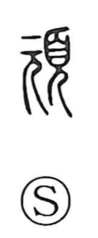

頑

Kun: katakuna | On: gan
stubborn ・ obstinate ・ strong
Explanation
A phono-semantic character: 元 serves as the phonetic element marking the On reading gan, and it depicts a person with emphasis on the neck. Because the neck firmly bears the heavy head and does not bend, 元 imparts the idea of strength and unyielding firmness. From this core sense arise uses such as ganko (stubborn, persistent), for clinging to one’s views; ganken (robust), for a strong and healthy body; and gangu or ganmei, for dull, obstinate refusal to heed others. Thus 頑 conveys hardness and strength, and by extension an obstinate, sometimes foolish, stubbornness.